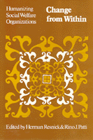

A theoretical and practical guide for human service professionals who seek to influence administrative decision-making
A theoretical and practical guide for human service professionals who seek to influence administrative decision-making


 A theoretical and practical guide for human service professionals who seek to influence administrative decision-making
A theoretical and practical guide for human service professionals who seek to influence administrative decision-making

|  |
Change from WithinHumanizing Social Welfare Organizationsedited by Herman Resnick and Rino J. Patti, foreword by Ronald Lippittpaper EAN: 978-0-87722-200-2 (ISBN: 0-87722-200-2) |
Most human service professionals, social workers, teachers, nurses, and other professionals work in large and increasingly centralized bureaucracies where decisionmakers are for the most part removed from the processes and problems associated with the delivery of services. Policies formulated at the upper levels of these organizations frequently have unintended adverse effects on clients, undermine the efforts of professionals, and seldom incorporate the ideas and recommendations of those at lower administrative levels.
This collection is intended as a theoretical and practical guide for human service professionals who seek to advocate proposals and influence administrative decision-making in order to improve the quality of services to clients. Building on a model of organizational change from below developed by Professors Resnick and Patti, the articles draw together and organize many of the significant contributions in this emerging area of practice for the first time.
Change from Within addresses the context of human services and gives special attention to organizational forces and conditions that often constrain or distort service delivery efforts. It also includes an examination of organizational receptivity to change form below and concludes with a discussion of strategies.
Herman Resnick is Associate Professor at the University of Washington.
Rino J. Patti is Professor of Social Work at the University of Washington.
Political Science and Public Policy
© 2015 Temple University. All Rights Reserved. This page: http://www.temple.edu/tempress/titles/208_reg.html.